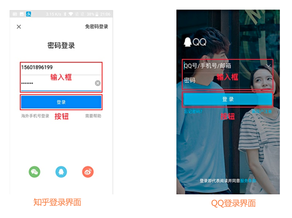
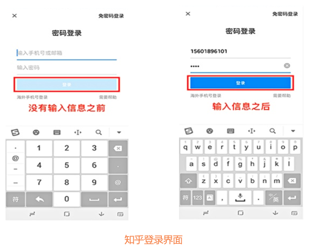
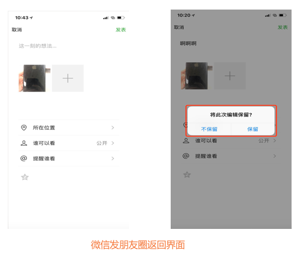
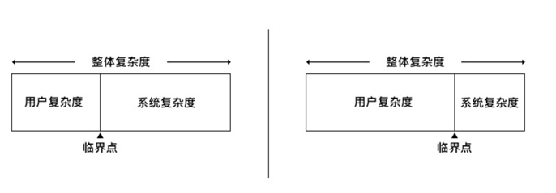
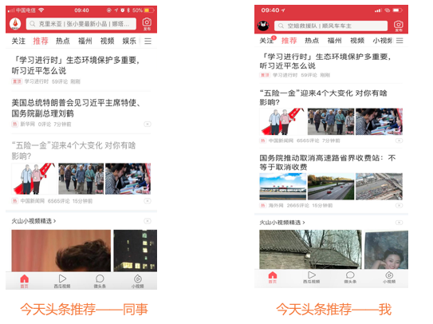
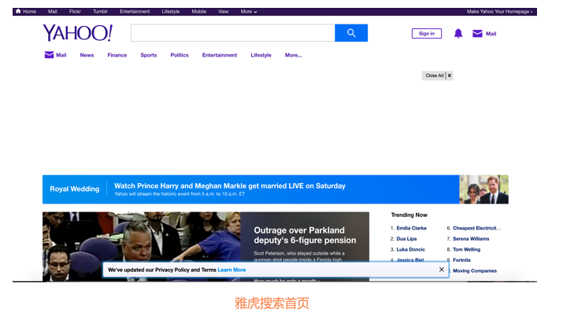

<!DOCTYPE html>
<html>
<head><meta name="generator" content="Hexo 3.8.0">
  <meta charset="utf-8">
  
  <title>交互设计七大定律下 | guowj</title>
  <meta name="viewport" content="width=device-width, initial-scale=1, maximum-scale=1">
  
  <meta name="keywords" content="产品交互设计">
  
  
  
  
  <meta name="description" content="&amp;nbsp;&amp;nbsp;&amp;nbsp;&amp;nbsp;&amp;nbsp;&amp;nbsp;本篇主要是继交互设计七大定律上的后续。这篇将详细记录下接近法则、防错原则、复杂性守恒定律和奥卡姆剃刀原理。">
<meta name="keywords" content="产品,交互设计">
<meta property="og:type" content="article">
<meta property="og:title" content="交互设计七大定律下">
<meta property="og:url" content="https://gwjacqueline.github.io/交互设计七大定律下/index.html">
<meta property="og:site_name" content="guowj">
<meta property="og:description" content="&amp;nbsp;&amp;nbsp;&amp;nbsp;&amp;nbsp;&amp;nbsp;&amp;nbsp;本篇主要是继交互设计七大定律上的后续。这篇将详细记录下接近法则、防错原则、复杂性守恒定律和奥卡姆剃刀原理。">
<meta property="og:locale" content="zh-CN">
<meta property="og:image" content="https://gwjacqueline.github.io/images/pm/jjfz.png">
<meta property="og:image" content="https://gwjacqueline.github.io/images/pm/jjfz2.png">
<meta property="og:image" content="https://gwjacqueline.github.io/images/pm/fcyz.png">
<meta property="og:image" content="https://gwjacqueline.github.io/images/pm/fcyz2.png">
<meta property="og:image" content="https://gwjacqueline.github.io/images/pm/fzx.png">
<meta property="og:image" content="https://gwjacqueline.github.io/images/pm/fzx1.png">
<meta property="og:image" content="https://gwjacqueline.github.io/images/pm/fzx2.png">
<meta property="og:image" content="https://gwjacqueline.github.io/images/pm/fzx.png">
<meta property="og:image" content="https://gwjacqueline.github.io/images/pm/tdyl.png">
<meta property="og:image" content="https://gwjacqueline.github.io/images/pm/tdyl2.png">
<meta property="og:image" content="https://gwjacqueline.github.io/images/pm/tdyl3.png">
<meta property="og:image" content="https://gwjacqueline.github.io/images/pm/tdyl4.png">
<meta property="og:updated_time" content="2019-06-23T12:28:58.000Z">
<meta name="twitter:card" content="summary">
<meta name="twitter:title" content="交互设计七大定律下">
<meta name="twitter:description" content="&amp;nbsp;&amp;nbsp;&amp;nbsp;&amp;nbsp;&amp;nbsp;&amp;nbsp;本篇主要是继交互设计七大定律上的后续。这篇将详细记录下接近法则、防错原则、复杂性守恒定律和奥卡姆剃刀原理。">
<meta name="twitter:image" content="https://gwjacqueline.github.io/images/pm/jjfz.png">
  
    <link rel="alternate" href="/atom.xml" title="guowj" type="application/atom+xml">
  

  

  <link rel="icon" href="/css/images/mylogo.png">
  <link rel="apple-touch-icon" href="/css/images/mylogo.png">
  
    <link href="//fonts.googleapis.com/css?family=Source+Code+Pro" rel="stylesheet" type="text/css">
  
  <link href="https://fonts.googleapis.com/css?family=Open+Sans|Montserrat:700" rel="stylesheet" type="text/css">
  <link href="https://fonts.googleapis.com/css?family=Roboto:400,300,300italic,400italic" rel="stylesheet" type="text/css">
  <link href="//netdna.bootstrapcdn.com/font-awesome/4.0.3/css/font-awesome.css" rel="stylesheet">
  <style type="text/css">
    @font-face{font-family:futura-pt; src:url("../css/fonts/FuturaPTBold.otf") format("woff");font-weight:500;font-style:normal;}
    @font-face{font-family:futura-pt-light; src:url("../css/fonts/FuturaPTBook.otf") format("woff");font-weight:lighter;font-style:normal;}
    @font-face{font-family:futura-pt-italic; src:url("../css/fonts/FuturaPTBookOblique.otf") format("woff");font-weight:400;font-style:italic;}
}

  </style>
  <link rel="stylesheet" href="/css/style.css">

  <script src="/js/jquery-3.1.1.min.js"></script>
  <script src="/js/bootstrap.js"></script>

  <!-- Bootstrap core CSS -->
  <link rel="stylesheet" href="/css/bootstrap.css">

  
    <link rel="stylesheet" href="/css/dialog.css">
  

  

  
    <link rel="stylesheet" href="/css/header-post.css">
  

  
  
  
    <link rel="stylesheet" href="/css/vdonate.css">
  

</head>
</html>


  <body data-spy="scroll" data-target="#toc" data-offset="50">


  
  <div id="container">
    <div id="wrap">
      
        <header>

    <div id="allheader" class="navbar navbar-default navbar-static-top" role="navigation">
        <div class="navbar-inner">
          
          <div class="container"> 
            <button type="button" class="navbar-toggle" data-toggle="collapse" data-target=".navbar-collapse">
              <span class="sr-only">Toggle navigation</span>
              <span class="icon-bar"></span>
              <span class="icon-bar"></span>
              <span class="icon-bar"></span>
            </button>

            
              <a class="brand" style="
                 margin-top: 0px;" href="#" data-toggle="modal" data-target="#myModal">
                  
              </a>
            
            
            <div class="navbar-collapse collapse">
              <ul class="hnav navbar-nav">
                
                  <li> <a class="main-nav-link" href="/">首页</a> </li>
                
                  <li> <a class="main-nav-link" href="/archives">归档</a> </li>
                
                  <li> <a class="main-nav-link" href="/categories">分类</a> </li>
                
                  <li> <a class="main-nav-link" href="/tags">标签</a> </li>
                
                  <li><div id="search-form-wrap">

    <form class="search-form">
        <input type="text" class="ins-search-input search-form-input" placeholder>
        <button type="submit" class="search-form-submit"></button>
    </form>
    <div class="ins-search">
    <div class="ins-search-mask"></div>
    <div class="ins-search-container">
        <div class="ins-input-wrapper">
            <input type="text" class="ins-search-input" placeholder="请输入关键词...">
            <span class="ins-close ins-selectable"><i class="fa fa-times-circle"></i></span>
        </div>
        <div class="ins-section-wrapper">
            <div class="ins-section-container"></div>
        </div>
    </div>
</div>
<script>
(function (window) {
    var INSIGHT_CONFIG = {
        TRANSLATION: {
            POSTS: '文章',
            PAGES: '页面',
            CATEGORIES: '分类',
            TAGS: '标签',
            UNTITLED: '(无标题)',
        },
        ROOT_URL: '/',
        CONTENT_URL: '/content.json',
    };
    window.INSIGHT_CONFIG = INSIGHT_CONFIG;
})(window);
</script>
<script src="/js/insight.js"></script>

</div></li>
            </ul></div>
          </div>
                
      </div>
    </div>

</header>


      
            
      <div id="content" class="outer">
        
          <section id="main" style="float:none;"><article id="post-交互设计七大定律下" style="width: 75%; float:left;" class="article article-type-post" itemscope itemprop="blogPost">
  <div id="articleInner" class="article-inner">
    
    
      <header class="article-header">
        
  
    <h1 class="thumb" itemprop="name">
      交互设计七大定律下
    </h1>
  

      </header>
    
    <div class="article-meta">
      
	<a href="/交互设计七大定律下/" class="article-date">
	  <time datetime="2019-06-22T07:17:48.000Z" itemprop="datePublished">2019-06-22</time>
	</a>

      
    <a class="article-category-link" href="/categories/产品/">产品</a>

      
	<a class="article-views">
	<span id="busuanzi_container_page_pv">
		阅读量<span id="busuanzi_value_page_pv"></span>
	</span>
	</a>

      

    </div>
    <div class="article-entry" itemprop="articleBody">
      
        <blockquote>
<p>&nbsp;&nbsp;&nbsp;&nbsp;&nbsp;&nbsp;本篇主要是继<a href="https://gwjacqueline.github.io/交互设计七大定律上/">交互设计七大定律上</a>的后续。这篇将详细记录下<code>接近法则</code>、<code>防错原则</code>、<code>复杂性守恒定律</code>和<code>奥卡姆剃刀原理</code>。</p>
</blockquote>
<a id="more"></a>
<h2 id="接近法则"><a href="#接近法则" class="headerlink" title="接近法则"></a>接近法则</h2><p>&nbsp;&nbsp;&nbsp;&nbsp;&nbsp;&nbsp;根据格式塔（Gestalt）心理学：当对象离得太近的时候，意识会认为它们是相关的。在交互设计中表现为一个提交按钮会紧挨着一个文本框，因此当相互靠近的功能块是不相关的话，就说明交互设计可能是有问题的。</p>
<h3 id="接近法则在交互上的启示"><a href="#接近法则在交互上的启示" class="headerlink" title="接近法则在交互上的启示"></a>接近法则在交互上的启示</h3><p>将相似的、有关联的信息尽量摆在一起。不要让用户迷茫，要他在潜意识里就知道在哪里能找到自己想要的信息。</p>
<h3 id="接近法则的实际应用"><a href="#接近法则的实际应用" class="headerlink" title="接近法则的实际应用"></a>接近法则的实际应用</h3><h4 id="将相似的、有关联的信息尽量摆在一起"><a href="#将相似的、有关联的信息尽量摆在一起" class="headerlink" title="将相似的、有关联的信息尽量摆在一起"></a>将相似的、有关联的信息尽量摆在一起</h4><div align="center"><br>  <br></div>

<p>&nbsp;&nbsp;&nbsp;&nbsp;&nbsp;&nbsp;比如登录界面的输入框与按钮。我们在使用任何一款 APP 产品的时候都会遇到登录或者注册页面，而且输入内容部分下面一定会有个按钮，原因就在于输入内容和按钮本身存在联系。因为输入内容之后，需要通过点击按钮来提交输入的内容，通常输入框附近一定会有提交按钮。</p>
<div align="center"><br>  <br></div>

<p>&nbsp;&nbsp;&nbsp;&nbsp;&nbsp;&nbsp;比如今日头条及爱奇艺视频信息布局。在今日头条和爱奇艺视频的的信息条目中，我们一眼都能发现，标题和图片是表示的同一类的信息，因为它们是放在一起，具有相关性。</p>
<h2 id="防错原则"><a href="#防错原则" class="headerlink" title="防错原则"></a>防错原则</h2><p>&nbsp;&nbsp;&nbsp;&nbsp;&nbsp;&nbsp;防错原则认为大部分的意外都是由设计的疏忽，而不是人为操作疏忽。通过改变设计可以把过失降到最低。</p>
<h3 id="防错原则在交互上的启示"><a href="#防错原则在交互上的启示" class="headerlink" title="防错原则在交互上的启示"></a>防错原则在交互上的启示</h3><p>在设计中建立必要的防错机制</p>
<h3 id="防错原则的实际应用"><a href="#防错原则的实际应用" class="headerlink" title="防错原则的实际应用"></a>防错原则的实际应用</h3><h4 id="在设计中建立必要的防错机制"><a href="#在设计中建立必要的防错机制" class="headerlink" title="在设计中建立必要的防错机制"></a>在设计中建立必要的防错机制</h4><div align="center"><br>  <br></div>

<p>&nbsp;&nbsp;&nbsp;&nbsp;&nbsp;&nbsp;比如知乎安卓版本的登录操作。当用户在知乎中登录时，在没有填写完手机号码和密码前，底部的登录按钮是置灰不可点击的。只有两项都填写完整底部的登录按钮才会变为可点击状态，也就是蓝色的。这就是为了防止用户犯更多错误，也是防错原则的一种体现。</p>
<div align="center"><br>  <br></div>

<p>&nbsp;&nbsp;&nbsp;&nbsp;&nbsp;&nbsp;在此，<strong>特别要注意</strong>在用户操作具有毁灭性效果的功能时要有提示，防止用户犯不可挽回的错误。比如安卓版微信发朋友圈动态时，点击返回按钮出现的提示弹窗。弹出框方式会增加不可逆操作的难度，当用户发一条动态一半的时候，因为误操作或者其它退出当前状态的时候，使用弹窗是个不错的选择。因为用户这个操作会让之前辛苦编辑的内容删除找不回，想要再发只能从头开始，对用户造成损失比较大。这就是防错原则的另外一种体现，</p>
<h2 id="复杂度守恒定律"><a href="#复杂度守恒定律" class="headerlink" title="复杂度守恒定律"></a>复杂度守恒定律</h2><div align="center"><br>  <br></div>

<p>&nbsp;&nbsp;&nbsp;&nbsp;&nbsp;&nbsp;指的是每一个过程都有其一定的的复杂性，存在一个临界点，超过了这个点过程就不能再简化了，你只能将固有的复杂性从一个地方移动到另外一个地方。就比如说我们做转账原型的时候，转账人的姓名。卡号，银行是不可以再简化的。所以我们通过智能联想，和银行自动判定去转化他的复杂性。</p>
<h3 id="复杂度守恒定律在交互上的启示"><a href="#复杂度守恒定律在交互上的启示" class="headerlink" title="复杂度守恒定律在交互上的启示"></a>复杂度守恒定律在交互上的启示</h3><p>无论在产品开发环节还是在用户与产品的交互环节，这一固有的复杂度都无法依照我们的意愿去除，只能设法转移它的复杂性</p>
<h3 id="复杂度守恒定律的实际应用"><a href="#复杂度守恒定律的实际应用" class="headerlink" title="复杂度守恒定律的实际应用"></a>复杂度守恒定律的实际应用</h3><h4 id="通过技术手段转移它的复杂性"><a href="#通过技术手段转移它的复杂性" class="headerlink" title="通过技术手段转移它的复杂性"></a>通过技术手段转移它的复杂性</h4><div align="center"><br>  <br></div>

<p>&nbsp;&nbsp;&nbsp;&nbsp;&nbsp;&nbsp;比如手机设计演变我们先来看下左一的经典诺基亚手机。在诺基亚手机称霸的那个年代，基本上所有的手机样式都是一块显示屏幕加上底部的操作按键。屏幕负责显示内容，而底部的按键来实现各种操作，比如，打电话、发短信、上网、聊 QQ、等等。我们能清楚的看到它的布局还是蛮复杂的，尤其是密密麻麻的物理按键，屏幕也相对较小，阅读体验现在看来还是蛮差的。自从苹果发布苹果了全面屏智能手机之后，彻底改变了手机的设计风格和操作体验，也就是我们现在看到的安卓和苹果的智能手机样式，更大的屏幕、更简单的操作，想打开哪个 APP 就直接点击就好了。从手机的演变过程来看，智能手机简化了物理操作按键，它是通过技术手段降低了手机操作的复杂度，尤其是复杂的交互手势操作，复杂度的降低是通过大量的技术和资金投入解决，这就体现了复杂守恒定律。</p>
<div align="center"><br>  <br></div>

<p>&nbsp;&nbsp;&nbsp;&nbsp;&nbsp;&nbsp;比如今日头条的个性化信息推荐。今日头条的首页推荐内容，都是根据个人的浏览爱好或者倾向进行信息的推荐的，除了首页置顶内容外，其它内容的推荐每个人都是不一样的。我和一个同事可能微信是好友，所以还有一点类似。对于用户来讲，这样的私人定制信息体验很好，浏览的信息都是相关或者叫做用户自己喜欢的内容。对于用户来讲这是一件好事情，但是，对于产品的开发和设计者来说，这是一个很难的事情，因为实现这样的效果或者体验，需要很强的技术能力和大量服务器的支持，这种做法就是通过技术手段，将用户复杂度降低，转移到了开发者本身，使得用户的阅读体验在同类产品中做到独树一帜。</p>
<h2 id="奥卡姆剃刀原理"><a href="#奥卡姆剃刀原理" class="headerlink" title="奥卡姆剃刀原理"></a>奥卡姆剃刀原理</h2><div align="center"><br>  <br></div>

<p>&nbsp;&nbsp;&nbsp;&nbsp;&nbsp;&nbsp;该原理的含义指的是不必要的元素会降低设计的效率，而且增加没有想到的后果的发生概率。无法让用户捕捉到重要元素。这个原理就被称为“如无必要，勿增实体”，即如有两个功能相等的设计，那么选择最简单的。除非是用户真的需要，否则不要添加功能和交互。</p>
<h3 id="奥卡姆剃刀原理在交互上的启示"><a href="#奥卡姆剃刀原理在交互上的启示" class="headerlink" title="奥卡姆剃刀原理在交互上的启示"></a>奥卡姆剃刀原理在交互上的启示</h3><p>1.只放置必要的东西</p>
<p>2.减少点击次数</p>
<p>3.减少段落的次数</p>
<p>4.「外婆」规则</p>
<h3 id="奥卡姆剃刀原理的实际应用"><a href="#奥卡姆剃刀原理的实际应用" class="headerlink" title="奥卡姆剃刀原理的实际应用"></a>奥卡姆剃刀原理的实际应用</h3><h4 id="只放置必要的东西"><a href="#只放置必要的东西" class="headerlink" title="只放置必要的东西"></a>只放置必要的东西</h4><div align="center"><br>  <br></div>

<p>&nbsp;&nbsp;&nbsp;&nbsp;&nbsp;&nbsp;比如百度搜索首页界面。说到要快速搜索某项东西，我们一般都会想起百度搜索，不仅是因为搜索内容准确快，也因为搜索页面简洁，页面上搜索框是最显眼的，能让用户专注搜索。其他相关信息被放置在不起眼的右上角，也有更多产品的按钮，给用户提供入口。</p>
<h4 id="减少点击次数"><a href="#减少点击次数" class="headerlink" title="减少点击次数"></a>减少点击次数</h4><div align="center"><br>  <br></div>

<p>&nbsp;&nbsp;&nbsp;&nbsp;&nbsp;&nbsp;比如兴业银行充值与支付宝充值流程。如上图所示，兴业银行充值界面要完成整个的话费充值流程，需要点击动作 8 次，而支付宝的充值界面完成整个话费充值流程只需要点击一次，页面流程更短，效率更高。因此，我们可以看出减少用户的点击次数，能提升产品的用户体验。</p>
<h4 id="减少段落的次数"><a href="#减少段落的次数" class="headerlink" title="减少段落的次数"></a>减少段落的次数</h4><div align="center"><br>  <br></div>

<p>&nbsp;&nbsp;&nbsp;&nbsp;&nbsp;&nbsp;比如雅虎搜索首页界面。雅虎跟谷歌和百度一样，都是做搜索引擎的，而且是做的最早的一家，可是现在却没有谷歌和百度使用的人多，有部分原因在于首页设计的失误上。大家都知道谷歌和百度首页最显眼的就是搜索框，没有太多的干扰信息，而我们看看图中的雅虎首页，最大片的内容区域给了各种新闻和广告，最重要的搜索框在顶部所占的位置却很小，用户本来是搜索内容的，进入首页却看到大段的无关信息，分散了大多数用户只想搜索这个需求的注意力。</p>
<h4 id="「外婆」规则"><a href="#「外婆」规则" class="headerlink" title="「外婆」规则"></a>「外婆」规则</h4><div align="center"><br>  <br></div>

<p>&nbsp;&nbsp;&nbsp;&nbsp;&nbsp;&nbsp;就比如微信的界面设计。之前看到新闻说，微信也越来越关注如何服务好老年用户，比如开通语音和视频聊天功能，提升通话稳定性和质量等。微信算是大多数老年人使用最多的一款 APP。之前有人统计过，在发红包上，老年用户的活跃度甚至超过了 95 后，月均发送 25 次红包。从以上数据来看，微信是符合外婆规则的。</p>

      
    </div>
    <footer class="article-footer">
      
        <div id="donation_div"></div>

<script src="/js/vdonate.js"></script>
<script>
var a = new Donate({
  title: '如果觉得我的文章对您有用，请随意打赏。您的支持将鼓励我继续创作!', // 可选参数，打赏标题
  btnText: '打赏支持', // 可选参数，打赏按钮文字
  el: document.getElementById('donation_div'),
  wechatImage: '../images/wx.jpeg',
  alipayImage: '../images/zfb.jpg'
});
</script>
      
      
      <div>
        <ul class="post-copyright">
          <li class="post-copyright-author">
          <strong>本文作者:  </strong>guowj
          </li>
          <li class="post-copyright-link">
          <strong>本文链接:  </strong>
          <a href="/交互设计七大定律下/" target="_blank" title="交互设计七大定律下">https://gwjacqueline.github.io/交互设计七大定律下/</a>
          </li>
          <li class="post-copyright-license">
            <strong>版权声明:   </strong>
            本博客所有文章除特别声明外，均采用 <a rel="license" href="https://creativecommons.org/licenses/by-nc-nd/4.0/" target="_blank" title="Attribution-NonCommercial-NoDerivatives 4.0 International (CC BY-NC-ND 4.0)">CC BY-NC-ND 4.0</a>
            许可协议。转载请注明出处
          </li>
         
        </ul>
<div>
</div></div>
      
      
        
	<div id="comment">
		<!-- 来必力City版安装代码 -->
		<div id="lv-container" data-id="city" data-uid="MTAyMC80MzU1OS8yMDA5OA==" ">
		<script type="text/javascript">
		   (function(d, s) {
		       var j, e = d.getElementsByTagName(s)[0];

		       if (typeof LivereTower === 'function') { return; }

		       j = d.createElement(s);
		       j.src = 'https://cdn-city.livere.com/js/embed.dist.js';
		       j.async = true;

		       e.parentNode.insertBefore(j, e);
		   })(document, 'script');
		</script>
		<noscript>为正常使用来必力评论功能请激活JavaScript</noscript>
		</div>
		<!-- City版安装代码已完成 -->
	</div>


      
      
        
  <ul class="article-tag-list"><li class="article-tag-list-item"><a class="article-tag-list-link" href="/tags/交互设计/">交互设计</a></li><li class="article-tag-list-item"><a class="article-tag-list-link" href="/tags/产品/">产品</a></li></ul>

      

    </footer>
  </div>
  
    
<nav id="article-nav">
  
    <a href="/竞品分析/" id="article-nav-newer" class="article-nav-link-wrap">
      <strong class="article-nav-caption">上一篇</strong>
      <div class="article-nav-title">
        
          竞品分析
        
      </div>
    </a>
  
  
    <a href="/交互设计七大定律上/" id="article-nav-older" class="article-nav-link-wrap">
      <strong class="article-nav-caption">下一篇</strong>
      <div class="article-nav-title">交互设计七大定律上</div>
    </a>
  
</nav>

  
</article>

<!-- Table of Contents -->

  <aside id="toc-sidebar">
    <div id="toc" class="toc-article">
    <strong class="toc-title">文章目录</strong>
    
        <ol class="nav"><li class="nav-item nav-level-2"><a class="nav-link" href="#接近法则"><span class="nav-number">1.</span> <span class="nav-text">接近法则</span></a><ol class="nav-child"><li class="nav-item nav-level-3"><a class="nav-link" href="#接近法则在交互上的启示"><span class="nav-number">1.1.</span> <span class="nav-text">接近法则在交互上的启示</span></a></li><li class="nav-item nav-level-3"><a class="nav-link" href="#接近法则的实际应用"><span class="nav-number">1.2.</span> <span class="nav-text">接近法则的实际应用</span></a><ol class="nav-child"><li class="nav-item nav-level-4"><a class="nav-link" href="#将相似的、有关联的信息尽量摆在一起"><span class="nav-number">1.2.1.</span> <span class="nav-text">将相似的、有关联的信息尽量摆在一起</span></a></li></ol></li></ol></li><li class="nav-item nav-level-2"><a class="nav-link" href="#防错原则"><span class="nav-number">2.</span> <span class="nav-text">防错原则</span></a><ol class="nav-child"><li class="nav-item nav-level-3"><a class="nav-link" href="#防错原则在交互上的启示"><span class="nav-number">2.1.</span> <span class="nav-text">防错原则在交互上的启示</span></a></li><li class="nav-item nav-level-3"><a class="nav-link" href="#防错原则的实际应用"><span class="nav-number">2.2.</span> <span class="nav-text">防错原则的实际应用</span></a><ol class="nav-child"><li class="nav-item nav-level-4"><a class="nav-link" href="#在设计中建立必要的防错机制"><span class="nav-number">2.2.1.</span> <span class="nav-text">在设计中建立必要的防错机制</span></a></li></ol></li></ol></li><li class="nav-item nav-level-2"><a class="nav-link" href="#复杂度守恒定律"><span class="nav-number">3.</span> <span class="nav-text">复杂度守恒定律</span></a><ol class="nav-child"><li class="nav-item nav-level-3"><a class="nav-link" href="#复杂度守恒定律在交互上的启示"><span class="nav-number">3.1.</span> <span class="nav-text">复杂度守恒定律在交互上的启示</span></a></li><li class="nav-item nav-level-3"><a class="nav-link" href="#复杂度守恒定律的实际应用"><span class="nav-number">3.2.</span> <span class="nav-text">复杂度守恒定律的实际应用</span></a><ol class="nav-child"><li class="nav-item nav-level-4"><a class="nav-link" href="#通过技术手段转移它的复杂性"><span class="nav-number">3.2.1.</span> <span class="nav-text">通过技术手段转移它的复杂性</span></a></li></ol></li></ol></li><li class="nav-item nav-level-2"><a class="nav-link" href="#奥卡姆剃刀原理"><span class="nav-number">4.</span> <span class="nav-text">奥卡姆剃刀原理</span></a><ol class="nav-child"><li class="nav-item nav-level-3"><a class="nav-link" href="#奥卡姆剃刀原理在交互上的启示"><span class="nav-number">4.1.</span> <span class="nav-text">奥卡姆剃刀原理在交互上的启示</span></a></li><li class="nav-item nav-level-3"><a class="nav-link" href="#奥卡姆剃刀原理的实际应用"><span class="nav-number">4.2.</span> <span class="nav-text">奥卡姆剃刀原理的实际应用</span></a><ol class="nav-child"><li class="nav-item nav-level-4"><a class="nav-link" href="#只放置必要的东西"><span class="nav-number">4.2.1.</span> <span class="nav-text">只放置必要的东西</span></a></li><li class="nav-item nav-level-4"><a class="nav-link" href="#减少点击次数"><span class="nav-number">4.2.2.</span> <span class="nav-text">减少点击次数</span></a></li><li class="nav-item nav-level-4"><a class="nav-link" href="#减少段落的次数"><span class="nav-number">4.2.3.</span> <span class="nav-text">减少段落的次数</span></a></li><li class="nav-item nav-level-4"><a class="nav-link" href="#「外婆」规则"><span class="nav-number">4.2.4.</span> <span class="nav-text">「外婆」规则</span></a></li></ol></li></ol></li></ol>
    
    </div>
  </aside>

</section>
        
      </div>
      
      <footer id="footer">
  

  <div class="container">
      	<div class="row">
	      <!--<p> Powered by <a href="http://hexo.io/" target="_blank">Hexo</a> and <a href="https://github.com/iTimeTraveler/hexo-theme-hiker" target="_blank">Hexo-theme-hiker</a> </p>-->
	      <p id="copyRightEn">Copyright &copy;2019 guowj All Rights Reserved.</p>
	      
	      
    		<p class="busuanzi_uv">
				访客数 : <span id="busuanzi_value_site_uv"></span> |  
				访问量 : <span id="busuanzi_value_site_pv"></span>
		    </p>
  		   
		</div>

		
  </div>
</footer>


<!-- min height -->

<script>
    var wrapdiv = document.getElementById("wrap");
    var contentdiv = document.getElementById("content");
    var allheader = document.getElementById("allheader");

    wrapdiv.style.minHeight = document.body.offsetHeight + "px";
    if (allheader != null) {
      contentdiv.style.minHeight = document.body.offsetHeight - allheader.offsetHeight - document.getElementById("footer").offsetHeight + "px";
    } else {
      contentdiv.style.minHeight = document.body.offsetHeight - document.getElementById("footer").offsetHeight + "px";
    }
</script>
    </div>
    <!-- <nav id="mobile-nav">
  
    <a href="/" class="mobile-nav-link">Home</a>
  
    <a href="/archives" class="mobile-nav-link">Archives</a>
  
    <a href="/categories" class="mobile-nav-link">Categories</a>
  
    <a href="/tags" class="mobile-nav-link">Tags</a>
  
</nav> -->
    

<!-- mathjax config similar to math.stackexchange -->

<script type="text/x-mathjax-config">
  MathJax.Hub.Config({
    tex2jax: {
      inlineMath: [ ['$','$'], ["\\(","\\)"] ],
      processEscapes: true
    }
  });
</script>

<script type="text/x-mathjax-config">
    MathJax.Hub.Config({
      tex2jax: {
        skipTags: ['script', 'noscript', 'style', 'textarea', 'pre', 'code']
      }
    });
</script>

<script type="text/x-mathjax-config">
    MathJax.Hub.Queue(function() {
        var all = MathJax.Hub.getAllJax(), i;
        for(i=0; i < all.length; i += 1) {
            all[i].SourceElement().parentNode.className += ' has-jax';
        }
    });
</script>

<script type="text/javascript" src="https://cdnjs.cloudflare.com/ajax/libs/mathjax/2.7.1/MathJax.js?config=TeX-AMS-MML_HTMLorMML">
</script>


  <link rel="stylesheet" href="/fancybox/jquery.fancybox.css">
  <script src="/fancybox/jquery.fancybox.pack.js"></script>


<script src="/js/scripts.js"></script>


  <script src="/js/dialog.js"></script>


	<div style="display: none;">
    <script src="https://s95.cnzz.com/z_stat.php?id=1260716016&web_id=1260716016" language="JavaScript"></script>
  </div>


	<script async src="//busuanzi.ibruce.info/busuanzi/2.3/busuanzi.pure.mini.js">
	</script>


  </div>

  <div class="modal fade" id="myModal" tabindex="-1" role="dialog" aria-labelledby="myModalLabel" aria-hidden="true" style="display: none;">
  <div class="modal-dialog">
    <div class="modal-content">
      <div class="modal-header">
        <h2 class="modal-title" id="myModalLabel">设置</h2>
      </div>
      <hr style="margin-top:0px; margin-bottom:0px; width:80%; border-top: 3px solid #000;">
      <hr style="margin-top:2px; margin-bottom:0px; width:80%; border-top: 1px solid #000;">


      <div class="modal-body">
          <div style="margin:6px;">
            <a data-toggle="collapse" data-parent="#accordion" href="#collapseOne" onclick="javascript:setFontSize();" aria-expanded="true" aria-controls="collapseOne">
              正文字号大小
            </a>
          </div>
          <div id="collapseOne" class="panel-collapse collapse" role="tabpanel" aria-labelledby="headingOne">
          <div class="panel-body">
            您已调整页面字体大小
          </div>
        </div>
      


          <div style="margin:6px;">
            <a data-toggle="collapse" data-parent="#accordion" href="#collapseTwo" onclick="javascript:setBackground();" aria-expanded="true" aria-controls="collapseTwo">
              夜间护眼模式
            </a>
        </div>
          <div id="collapseTwo" class="panel-collapse collapse" role="tabpanel" aria-labelledby="headingTwo">
          <div class="panel-body">
            夜间模式已经开启，再次单击按钮即可关闭 
          </div>
        </div>

        <div>
            <a data-toggle="collapse" data-parent="#accordion" href="#collapseThree" aria-expanded="true" aria-controls="collapseThree">&nbsp;&nbsp;&nbsp;&nbsp;&nbsp;&nbsp;关 于&nbsp;&nbsp;&nbsp;&nbsp;&nbsp;&nbsp;</a>
        </div>
         <div id="collapseThree" class="panel-collapse collapse" role="tabpanel" aria-labelledby="headingThree">
          <div class="panel-body">
            guowj
          </div>
          <div class="panel-body">
            Copyright © 2019 guowj All Rights Reserved.
          </div>
        </div>
      </div>


      <hr style="margin-top:0px; margin-bottom:0px; width:80%; border-top: 1px solid #000;">
      <hr style="margin-top:2px; margin-bottom:0px; width:80%; border-top: 3px solid #000;">
      <div class="modal-footer">
        <button type="button" class="close" data-dismiss="modal" aria-label="Close"><span aria-hidden="true">×</span></button>
      </div>
    </div>
  </div>
</div>
  
  <a id="rocket" href="#top" class=""></a>
  <script type="text/javascript" src="/js/totop.js?v=1.0.0" async=""></script>
  
    <a id="menu-switch"><i class="fa fa-bars fa-lg"></i></a>
  
</body>
</html>